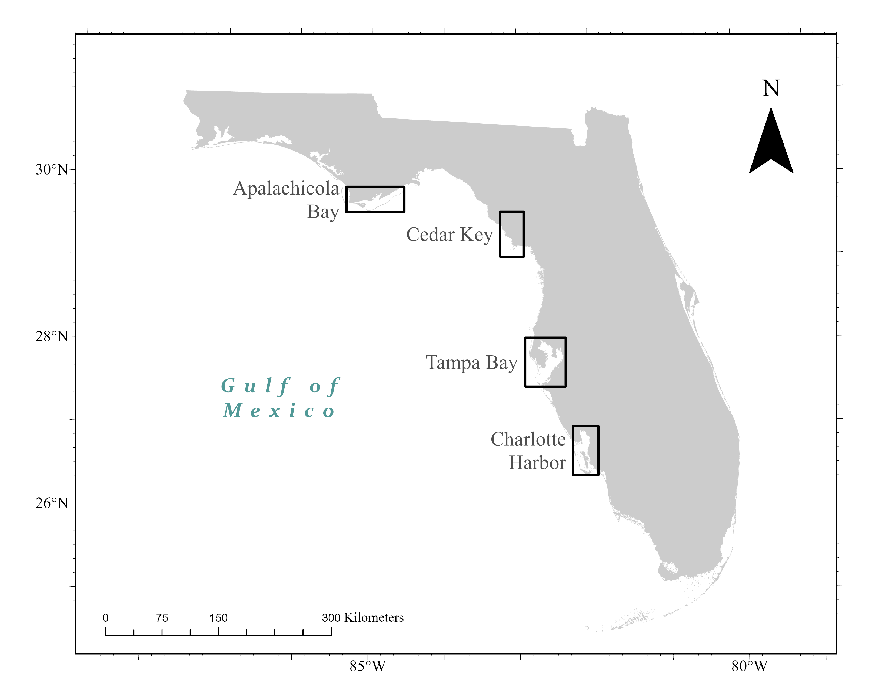

| Genus | Species |
|---|---|
| Anchoa spp. | A. cayorum |
| A. cubana | |
| A. hepsetus | |
| A. lamprotaenia | |
| A. lyolepis | |
| A. mitchilli | |
| Eucinostomus spp. | E. argenteus |
| E. gula | |
| E. harengulus | |
| E. havana | |
| E. jonesii | |
| E. lefroyi | |
| E. melanopterus |
Effects of Climate Change on Estuarine Fish Assemblages
Garrett Miller ![]()
Abstract
This is a test abstract
Introduction
Global climate change is having strong effects on biodiversity and associated ecosystem structure and functions (Doney et al. 2012; Poloczanska et al. 2016; Murphy, Romanuk, and Worm 2020). Shifts in species distributions (McCarty 2001), changes in phenology (Stenseth and Mysterud 2002), and changes in biodiversity (Dornelas et al. 2019) have been observed globally. However, the direction and magnitude of change varies. For example, species richness is declining around the equator and increasing at midlatitudes (Chaudhary et al. 2021). Some taxa are migrating poleward while others remain unchanged in distribution (Parmesan et al. 1999; Perry et al. 2005; Chivers, Walne, and Hays 2017). Given that changes in biodiversity can affect ecosystem stability (Hautier et al. 2015), there has been increased concern about how climate change will alter ecosystems, including rainforests (Levine et al. 2016), coral reefs (Toth et al. 2019), and estuaries (Erickson et al. 2021). However, our understanding of changes in ecosystem stability has been limited by a paucity of long-term time series data (but see Dornelas et al. 2018). Further, many ecosystems at lower latitudes have received comparatively less attention than those at higher latitudes. Understanding stability in these lower latitude ecosystems can shed light on their responses to climate change and broaden our understanding about generalities.
Temperature is known to affect population-level demographics in several ways, including the sex ratio of offspring (Ospina-Álvarez and Piferrer 2008), growth rates of young (Raventos et al. 2021), and individual survivorship (Stevens et al. 2016). However, the effects of shifting temperatures are more nuanced at the community level. Studies have highlighted such influences as changes in seasonal weather extremes (Easterling et al. 2000; Miner et al. 2021), shifts in season duration (Cooper 2014), and variation in disturbance frequency, intensity, and duration (Dale et al. 2001), among others. Such factors can drive community-level change in different magnitudes and directions. For example, as distributions of taxa shift in response to warming temperature, the invasion of predators and new pathogens can lead to the extirpation of native species (Sax et al. 2007). Although average temperatures are increasing globally, the magnitude of these changes may not be consistent among seasons, with warming expected to occur more quickly in the winter than the summer for many ecosystems (Clark, Kerry, and Fraser 2020). This seasonal imbalance in temperature change has already contributed to the global poleward expansion of mangroves and is linked to a reduction in frequency and intensity of cold weather events (Saintilan et al. 2014). Given the importance of season on biota globally, such asymmetric change in temperature may have complex effects. For example, the intensity of a preceding winter is associated with differences in the springtime estuarine fish assemblages that follow (Curran and Wilber 2019). In addition, the simultaneous increase in temperature variability due to climate change has been demonstrated to directly influence species richness, with concurrent effects on community stability (Zhang et al. 2018). Within marine systems, there is evidence that regions at lower latitude have become less stable compared to their higher latitude counterparts due to their responses to temperature (Miner et al. 2021).
The eastern Gulf of Mexico (eGOM) is a productive subtropical region that supports diverse communities including mangrove- and marshgrass-dominated estuaries, seagrass systems, and hardbottom reefs. The region is bisected by the Northern Gulf of Mexico ecoregion to the north and Floridian to the south, which are characterized by compositionally different marine assemblages (Spalding et al. 2007). Seagrass systems across this region act as important juvenile habitats for many fishes and have high regional variability in the populations and communities they support (Schrandt et al. 2018; Faletti et al. 2019; Peake et al. 2022). Globally, temperate ecosystems are undergoing tropicalization, with previously rare or absent tropically-associated taxa increasing in abundance through time (Nakamura et al. 2013; Osland et al. 2021). The effects of these invading taxa are profound and can lead to regime shifts (Vergés et al. 2014; Wernberg et al. 2016). Yet, there is evidence that some subtropical ecosystems are resilient to tropicalization due to additional factors, such as dispersal limitations of potential invaders (Mizerek et al. 2021). In the eGOM, the expansion of three co-occurring mangrove species in Florida estuaries has been linked to reduced frequency of extreme cold events (Cavanaugh et al. 2014) and is already creating novel mangrove-marsh assemblages (Cook-Patton, Lehmann, and Parker 2015), with shifts in faunal communities predicted to follow (Scheffel, Heck, and Johnson 2018). Indeed, warmer winter temperatures have been associated with the poleward expansion of a mangrove-associated fish species in this region (Purtlebaugh, Martin, and Allen 2020) and affected community stability in other estuarine systems in North America (Miner et al. 2021).
Increased abundance of tropically-associated taxa had already been observed in northern Gulf of Mexico (nGOM) seagrass systems as early as 2006, potentially indicating tropicalization by taxa from the Floridian ecoregion (Fodrie et al. 2010). However, Fodrie et al. (2010) was restricted to the northernmost edge of the eGOM as well as only the summer and fall seasons. Further, assemblages commonly differ between summer and winter in subtropical and temperate estuaries (Hagan and Able 2003; Strydom 2015; Schrandt and MacDonald 2020). Thus, it is unclear how estuarine systems across the broader eGOM may be responding to climate change, especially in the context of imbalanced seasonal temperature change. Long-term data collected consistently within and across multiple eGOM estuaries that span temperate and subtropical latitudes can improve our ability to evaluate the stability of these assemblages and establish a timeline of tropicalization in this region. Long-term time series data are available in the eGOM, where estuarine seine hauls have been conducted monthly since 1997 and followed consistent study designs and methods. Using these data, I will investigate whether fish assemblages in estuaries within the eGOM have changed over a 20-year period in response to climate change. Specifically, I will address the following questions: 1) has the richness and abundance of eGOM estuarine fish assemblages changed over a 20-year period? 2) Has the composition and stability of eGOM estuarine fish assemblages changed over time and, if so, are these changes related to water temperature?
Methods
Data collection
This study used data collected by the Florida Fish and Wildlife Research Institute’s (FWRI) Fisheries Independent Monitoring (FIM) program. The program follows a monthly stratified random sampling design in estuaries across Florida, including four in the eastern Gulf of Mexico (from north to south: Apalachicola Bay (AB), Cedar Key (CK), Tampa Bay (TB), and Charlotte Harbor (CH); Figure 1). Apalachicola Bay is a shallow, semi-enclosed estuary located on the northern coast of the GOM in the panhandle of Florida, USA and is within the Northern Gulf of Mexico ecoregion (Spalding et al. 2007). Cedar Key is located within the Suwannee River open estuary system and is also in the Northern Gulf of Mexico ecoregion. Tampa Bay is Florida’s largest open water estuary and lies within the Floridian ecoregion (Spalding et al. 2007). Charlotte Harbor, a drowned river estuary system, is within the Floridian ecoregion (FWRI 2017). All systems are dominated by seagrass vegetation in shallow waters, except for Apalachicola Bay, where seagrass is less than 7% of bottom coverage (FWRI 2017). However, sampling gear was partly determined by habitat, where all seagrass at particular depths were sampled with the same gear type across estuaries (see also below, FWRI 2017). Finally, marsh grasses and oyster beds are dominant along shorelines in Apalachicola Bay and Cedar Key, while mangroves dominate in Charlotte Harbor, and Tampa Bay is characterized by a mix of marsh grasses, oyster beds, and mangroves (FWRI 2017).

Within each estuary, sampling was divided into zones (subdivided into 1-nm2 grids) based on geographic, habitat, and depth criteria (FWRI 2017). These criteria defined which of three different types of gear were used to collect organisms. For this study, only the 21.3-m seine net were considered, because it was used the longest and most consistently throughout the study period. Specifically, this gear targeted young-of-year and juvenile fishes in shallow habitats (≤1.8-m deep). For every net deployment, all vertebrates and select commercially important invertebrates were counted and identified to the lowest practical taxonomic level (typically species). This study used all available seine data from 1998 to 2020. Further, each seine haul was categorized by season, with summer defined as June-September and winter as December-March, following (Schrandt and MacDonald 2020). Due to the similarity in appearance, and thus difficulty for in situ species-level identification, certain taxa were aggregated at the genus level to reduce potential effects of misidentification (Table 1). A visual estimate of the percent bottom vegetation coverage is recorded for each sampling event. Finally, using a YSI sonde, several parameters, including water temperature, were recorded at the surface of the water and at the bottom during each sampling event.
In total, 17492 sampling events occurred where at least one taxa was caught and counted during summer or winter across all four estuaries. For seven sampling events, temperature data were unavailable and thus excluded from the analyses. Further, hauls that were composed solely of rare species (taxa found in ≤5% of all samples for that system and season) were removed from the analyses which reduced samples down to 17254. Overall, 299 taxa in the dataset were recorded, spanning 22 years of collections.
Data Analyses
All analyses were conducted using the R Statistical Computing Environment v4.3.0 and an alpha of 0.05 was used for all significance testing (R Core Team 2023). Preliminary analyses included running simple linear models on annually-summarized means of water temperature and bottom vegetation coverage. Upon first examination, the change in temperature over time was marginally significant for winter estuaries (p 0.059-0.366). However, after visual inspection, the anomalously cold winter of 2010 (CITE) appeared as a distinct outlier and was dropped from the winter models (Supplemental?). From here, I ran Analysis of Covariance (ANCOVA) models with year as a continuous variable and estuarine system as a categorical predictor while including the interaction between both. I performed post-hoc contrasts for any significant terms in these models to determine the magnitude of any specific differences across systems using the emmeans package (Lenth 2023).
To address if the richness and abundance of eGOM estuarine fish assemblages has changed over the study period, I modeled richness and abundance per haul across all estuaries for both the summer and winter seasons using generalized linear mixed models (GLMMs) from the R package glmmTMB (Brooks et al. 2017). Given the well-documented seasonal differences in estuarine systems (see Hagan and Able 2003; Strydom 2015; Schrandt and MacDonald 2020), in this and all subsequent analyses, summer and winter are treated entirely separately. For each seine haul, I calculated the richness as the number of taxa present and total abundance as the sum of all individuals counted. In all calculations, total abundance was fourth-root transformed to reduce the effects of overly-abundant taxa, given total abundance ranged from a maximum of 104502 to 1. For each model, the response in the GLMM included either the richness or transformed abundance of each haul, with estuary (four levels) as a fixed effect and year as a random effect. To account for serial autocorrelation, an ar1 covariance matrix was used in each model calculated from month of sampling event and within-estuary zone. Given that species richness is strongly affected by sampling effort (Mittelbach and McGill 2019), I included an offset term to account for variation in the number of seine hauls. Before examining the relationship between temperature and richness/abundance, I used permutational multivariate analysis of variance (PERMANOVA) from the R package vegan to examine the interaction between estuary and time, as a means to determine if there are different magnitudes and directions of temporal change among estuaries and thus if each estuary should be treated separately (Oksanen et al. 2022).
To explore whether the composition and abundance has changed over the same time period and if it may be related to water temperature, I used several techniques. First, I examined the turnover and nestedness of each system through time using the R package betapart (Baselga et al. 2023). Then, I ran additional GLMM models for each estuary, but included random terms for Z-scored water temperature and Z-scored percent bottom vegetation coverage (BVC). In all cases, the same ar1 covariance structure was used as before as well as an offset term for sampling effort. To explore the relationship of temperature to richness and abundance, I used multiple GLMM models wherein the formula used for each was: response ~ (1|year_Z) + temp_Z + bvc_Z + offset(log(n_hauls)) + ar1(yearMonth + 0|systemZone) where response was either total abundance or total richness per haul. I used distance-based redundancy analysis (dbRDA) from the R package vegan to explore the magnitude and direction of effect of water temperature and BVC in multivariate species-space. Finally, to explore the a priori hypothesis of a possible “directional” change in species space over time, I used canonical analysis of principal coordinates (CAP) models from the R package BiodiversityR for each estuary and season (Kindt and Coe 2005). Following Dornelas et al.(2019), I further examined individual taxa for change over time. Within each estuary and season, I ran a linear model on the transformed abundance of each taxa independently and tested for significance. This was used to determine both the magnitude and direction of change at the species level, thus describing the distribution of “winners and losers” across each estuarine system. Finally, climatological association data were pulled from Fishbase using rfishbase (Boettiger, Temple Lang, and Wainwright 2012). Unless otherwise indicated, mean values reported from these analyses will be reported as mean ± one standard error.
Results
Overview
Throughout the study period, water temperature was increasing during winter for all systems at a rate nearly double that observed during the summer (Figure 2). However, percent bottom vegetation coverage (BVC) had a more nuanced response over time, with increases observed in Charlotte Harbor and Tampa Bay, a decrease in Cedar Key winter, and no change in Apalachicola Bay. In species-space, 91 out of 295 total identified taxa had significant changes in abundance over time across all systems.
Habitat Parameters
Results of the water temperature ANCOVAs indicated a significant positive trend that was consistent among estuaries. However, it also identified differences in mean temperature across some systems (t ≥ 5.453 for all p < 0.05; Table 2).
Table 2: Output of ANOCVA models.
| term | estimate | std.error | statistic | p.value |
|---|---|---|---|---|
| (Intercept) | 29.13 | 0.2174 | 134 | 5.825e-94 |
| smallYear | 0.03548 | 0.01579 | 2.247 | 0.02748 |
| systemCK | 0.1129 | 0.3074 | 0.3674 | 0.7143 |
| systemTB | 0.4336 | 0.2726 | 1.591 | 0.1157 |
| systemCH | 0.9061 | 0.2726 | 3.324 | 0.001352 |
| smallYear:systemCK | -0.02626 | 0.02233 | -1.176 | 0.2432 |
| smallYear:systemTB | -0.01639 | 0.02033 | -0.8061 | 0.4226 |
| smallYear:systemCH | -0.02336 | 0.02033 | -1.149 | 0.254 |
| term | estimate | std.error | statistic | p.value |
|---|---|---|---|---|
| (Intercept) | 15.05 | 0.4893 | 30.76 | 6.652e-44 |
| smallYear | 0.07568 | 0.03532 | 2.143 | 0.03543 |
| systemCK | 0.8862 | 0.692 | 1.281 | 0.2043 |
| systemTB | 3.342 | 0.6128 | 5.453 | 6.244e-07 |
| systemCH | 5.043 | 0.6128 | 8.229 | 4.78e-12 |
| smallYear:systemCK | -0.03396 | 0.04995 | -0.6799 | 0.4987 |
| smallYear:systemTB | -0.01058 | 0.04548 | -0.2326 | 0.8167 |
| smallYear:systemCH | -0.008819 | 0.04548 | -0.1939 | 0.8468 |
Using post-hoc contrasts, I parsed out these differences among estuaries and seasons. For the winter season, I determined Apalachicola Bay and Cedar Key averaged 15.9°C ± 0.21 during the study period, compared to 19.2°C ± 0.2 for Tampa Bay and 20.9°C ± 0.2 for Charlotte Harbor (t ratios ≥ 6.233 for all p < 0.05; Table 3). However, for the summer, Charlotte Harbor averaged warmer than all other systems at 30.2°C ± 0.085 (t ratios ≥ 3.238 for all p < 0.05; Table 3). Average water temperatures in Cedar Key and Apalachicola Bay were not different from one another (29.5°C ± 0.092), although Tampa Bay was significantly different than Cedar Key, but not Apalachicola Bay, averaging 29.8°C ± 0.085. For all systems during winter, water temperature increased at a rate of 0.076°Cyr-1 ± 0.035 and we found no difference in this rate among estuaries. Similarly, during summer, water temperature increased in all systems at a rate of 0.035°Cyr-1 ± 0.016 and we again found no difference in rate among estuaries (Figure 2).
Table 3: Contrasts from ANCOVA models. Tukey method applied for p-value correction.
| contrast | estimate | SE | df | t.ratio | p.value |
|---|---|---|---|---|---|
| CK - AP | -0.1943 | 0.13 | 78 | -1.494 | 0.4459 |
| TB - AP | 0.2419 | 0.1255 | 78 | 1.928 | 0.2248 |
| TB - CK | 0.4362 | 0.1255 | 78 | 3.477 | 0.004538 |
| CH - AP | 0.6329 | 0.1255 | 78 | 5.044 | 1.706e-05 |
| CH - CK | 0.8271 | 0.1255 | 78 | 6.592 | 2.77e-08 |
| CH - TB | 0.3909 | 0.1207 | 78 | 3.238 | 0.009403 |
| contrast | estimate | SE | df | t.ratio | p.value |
|---|---|---|---|---|---|
| CK - AP | 0.4894 | 0.2985 | 74 | 1.64 | 0.3631 |
| TB - AP | 3.219 | 0.2875 | 74 | 11.19 | 0 |
| TB - CK | 2.729 | 0.2875 | 74 | 9.492 | 0 |
| CH - AP | 4.94 | 0.2875 | 74 | 17.18 | 0 |
| CH - CK | 4.451 | 0.2875 | 74 | 15.48 | 0 |
| CH - TB | 1.721 | 0.2762 | 74 | 6.233 | 1.515e-07 |

ANCOVA models for average percent bottom vegetation coverage (BVC) identified differences in mean annual percent BVC across all systems and seasons as well as an interaction between some systems and time Table 6. Post-hoc analyses confirmed all systems had different average annual BVC from one another within each season. Specifically, Charlotte Harbor had the most coverage for both seasons ranging from 46.4% ± 0.771 in winter to 49.7% ± 0.755 in summer. Cedar Key averaged the lowest coverage, ranging from 9.09% ± 0.831 in winter to 13.6% ± 0.813 in summer. Tampa Bay and Apalachicola Bay were both in the middle of these ranges for both seasons Table 6. Using post-hoc analyses to examine the trends over time for each system revealed Cedar Key was different than all other systems for the summer season, with a decrease in BVC at a rate of -0.441%yr-1 ± 0.14 (magnitude of t ratios ≥ 2.81 for all p < 0.05). All other system pairs were not different from one another and had no change over time [TABLE]. The wintertime trend was more nuanced, where BVC in both Tampa Bay and Charlotte Harbor differed from the northern estuaries Apalachicola Bay and Cedar Key (magnitude of t ratios ≥ 3.05 for all p < 0.05) [TABLE]. BVC in Tampa Bay and Charlotte Harbor increased during the winter at a rate of 0.404%yr-1 ± 0.116 and 0.486%yr-1 ± 0.116, respectively. Apalachicola Bay did not have any significant change in BVC over the study period (Figure 3).
Table 4: Output of ANCOVA models.
| term | estimate | std.error | statistic | p.value |
|---|---|---|---|---|
| (Intercept) | 29.29 | 1.924 | 15.23 | 4.501e-25 |
| smallYear | 0.2349 | 0.1397 | 1.681 | 0.09672 |
| systemCK | -10.51 | 2.72 | -3.863 | 0.0002299 |
| systemTB | 9.444 | 2.412 | 3.916 | 0.0001918 |
| systemCH | 16.38 | 2.412 | 6.791 | 1.966e-09 |
| smallYear:systemCK | -0.6756 | 0.1976 | -3.419 | 0.001002 |
| smallYear:systemTB | -0.1702 | 0.1799 | -0.9464 | 0.3469 |
| smallYear:systemCH | 0.1135 | 0.1799 | 0.6311 | 0.5298 |
| term | estimate | std.error | statistic | p.value |
|---|---|---|---|---|
| (Intercept) | 28.29 | 1.964 | 14.4 | 1.112e-23 |
| smallYear | -0.1554 | 0.1427 | -1.089 | 0.2794 |
| systemCK | -16.66 | 2.777 | -5.997 | 5.91e-08 |
| systemTB | 8.181 | 2.462 | 3.322 | 0.001361 |
| systemCH | 12.4 | 2.462 | 5.037 | 2.981e-06 |
| smallYear:systemCK | -0.06177 | 0.2018 | -0.3061 | 0.7603 |
| smallYear:systemTB | 0.5595 | 0.1836 | 3.047 | 0.003156 |
| smallYear:systemCH | 0.6418 | 0.1836 | 3.494 | 0.0007863 |
Table 5: Contrasts from ANCOVA models. Tukey method applied for p-value correction.
| contrast | estimate | std.error | df | statistic | adj.p.value |
|---|---|---|---|---|---|
| CK - AP | -0.6756 | 0.1976 | 78 | -3.419 | 0.005428 |
| TB - AP | -0.1702 | 0.1799 | 78 | -0.9464 | 0.78 |
| TB - CK | 0.5054 | 0.1799 | 78 | 2.81 | 0.03119 |
| CH - AP | 0.1135 | 0.1799 | 78 | 0.6311 | 0.9217 |
| CH - CK | 0.7891 | 0.1799 | 78 | 4.387 | 0.0002052 |
| CH - TB | 0.2837 | 0.1602 | 78 | 1.771 | 0.2949 |
| contrast | estimate | std.error | df | statistic | adj.p.value |
|---|---|---|---|---|---|
| CK - AP | -0.06177 | 0.2018 | 78 | -0.3061 | 0.99 |
| TB - AP | 0.5595 | 0.1836 | 78 | 3.047 | 0.01633 |
| TB - CK | 0.6213 | 0.1836 | 78 | 3.383 | 0.006062 |
| CH - AP | 0.6418 | 0.1836 | 78 | 3.494 | 0.004291 |
| CH - CK | 0.7035 | 0.1836 | 78 | 3.831 | 0.00144 |
| CH - TB | 0.08222 | 0.1635 | 78 | 0.5027 | 0.9582 |
| system | season | estimate | std.error |
|---|---|---|---|
| AP | summer | 32.04 | 0.813 |
| CK | summer | 13.62 | 0.813 |
| TB | summer | 39.49 | 0.755 |
| CH | summer | 49.74 | 0.755 |
| AP | winter | 26.47 | 0.831 |
| CK | winter | 9.092 | 0.831 |
| TB | winter | 41.2 | 0.771 |
| CH | winter | 46.38 | 0.771 |

Community Data
Total abundance was generally lower for all systems in the winter season (average total abundance 275 ±14), with summer generally higher (average total abundance 418 ±19) (Figure 4).

Results from total abundance GLMMs indicated a positive correlation between BVC and total abundance for all estuaries and seasons (Table 7). Water temperature was also positively correlated with total abundance in all estuaries, though only in the winter. In winter, the magnitude of the effect of BVC was similar to that of temperature. In summer, there were no differences in mean total abundance across all systems, while in winter, Apalachicola Bay had greater abundance than all other systems and Charlotte Harbor had higher total abundance than Tampa Bay (magnitude of t ratios ≥ 3.995396 for all p < 0.05 Table 7 (c)). The response of total abundance over time was more nuanced, with all systems decreasing over time, though total abundance in Tampa Bay was decreasing at a slower rate than in Apalachicola Bay (t = 2.94 p = 0.0171 Table 7 (d)).
Table 7: Outputs of fixed effects from total abundance GLMMs run within each estuary. Bolded values are significant at alpha 0.05.
| term | estimate | std.error | p.value |
|---|---|---|---|
| (Intercept) | -4.156 | 0.1732 | 3.331e-127 |
| smallYear | 0.01011 | 0.01246 | 0.417 |
| systemCK | -0.1155 | 0.2433 | 0.6348 |
| systemTB | -0.3509 | 0.1965 | 0.07418 |
| systemCH | 0.1022 | 0.2018 | 0.6127 |
| bvc_Z | 0.3957 | 0.01512 | 5.276e-151 |
| temp_Z | -0.006187 | 0.01513 | 0.6826 |
| smallYear:systemCK | -0.009638 | 0.01752 | 0.5823 |
| smallYear:systemTB | 0.006036 | 0.01429 | 0.6728 |
| smallYear:systemCH | -0.01327 | 0.01466 | 0.3652 |
| term | estimate | std.error | p.value |
|---|---|---|---|
| (Intercept) | -3.689 | 0.207 | 5.236e-71 |
| smallYear | -0.05099 | 0.01499 | 0.0006691 |
| systemCK | -1.017 | 0.2928 | 0.0005164 |
| systemTB | -1.354 | 0.2323 | 5.571e-09 |
| systemCH | -0.8421 | 0.2401 | 0.0004522 |
| bvc_Z | 0.2181 | 0.01563 | 3.153e-44 |
| temp_Z | 0.2627 | 0.01831 | 1.155e-46 |
| smallYear:systemCK | 0.03974 | 0.02118 | 0.06064 |
| smallYear:systemTB | 0.05014 | 0.01703 | 0.003235 |
| smallYear:systemCH | 0.0345 | 0.01755 | 0.04937 |
| contrast | estimate | std.error | df | statistic | adj.p.value |
|---|---|---|---|---|---|
| CK - AP | -0.5387 | 0.1242 | 8322 | -4.338 | 8.574e-05 |
| TB - AP | -0.7513 | 0.1033 | 8322 | -7.274 | 3.128e-11 |
| TB - CK | -0.2126 | 0.1033 | 8322 | -2.057 | 0.1674 |
| CH - AP | -0.4273 | 0.1064 | 8322 | -4.016 | 0.0003472 |
| CH - CK | 0.1114 | 0.1065 | 8322 | 1.046 | 0.7221 |
| CH - TB | 0.324 | 0.0811 | 8322 | 3.995 | 0.000379 |
| contrast | estimate | std.error | df | statistic | adj.p.value |
|---|---|---|---|---|---|
| CK - AP | 0.03974 | 0.02118 | 8322 | 1.876 | 0.2384 |
| TB - AP | 0.05014 | 0.01703 | 8322 | 2.944 | 0.0171 |
| TB - CK | 0.0104 | 0.01704 | 8322 | 0.6102 | 0.9289 |
| CH - AP | 0.0345 | 0.01755 | 8322 | 1.965 | 0.2013 |
| CH - CK | -0.005242 | 0.01757 | 8322 | -0.2984 | 0.9908 |
| CH - TB | -0.01564 | 0.01222 | 8322 | -1.279 | 0.5762 |
The total richness (Figure 5) in winter (average richness 5.8 ±0.038) was consistently lower for each estuary than in the summer (average richness 8.7 ±0.046).

GLMMs for total richness indicated a positive correlation between BVC and total richness for all systems and seasons. As with total abundance, water temperature was not significant in any estuaries during the summer but was again positively associated with richness in all estuaries in winter (Table 8). However, the relative magnitude of the effect of BVC compared to the effect of water temperature on richness was greater than it was in the abundance models. The modeled average richness of Apalachicola Bay in summer was greater than all other estuaries, with no significant difference in means among the other three (magnitude of t ratios ≥ 3.72 for all p < 0.05 Table 8 (c)). In winter, modeled average richness was more nuanced, where Charlotte Harbor had the highest modeled richness compared to all other estuaries, Tampa Bay had higher than Cedar Key, and Cedar Key had less than Apalachicola Bay (magnitude of t ratios ≥ 3.22 for all p < 0.05 Table 8 (d)) Further, total richness had no discernible trends over time in any of the estuaries or seasons.
Table 8: Outputs of fixed effects from total richness GLMMs run within each estuary. Bolded values are significant at alpha 0.05.
| term | estimate | std.error | p.value |
|---|---|---|---|
| (Intercept) | 2.223 | 0.5401 | 3.857e-05 |
| smallYear | -0.002546 | 0.03885 | 0.9477 |
| systemCK | -0.9814 | 0.7637 | 0.1988 |
| systemTB | -1.704 | 0.6109 | 0.005288 |
| systemCH | -0.8605 | 0.631 | 0.1727 |
| bvc_Z | 1.504 | 0.04469 | 2.199e-248 |
| temp_Z | 0.07444 | 0.04483 | 0.0968 |
| smallYear:systemCK | -0.02157 | 0.05492 | 0.6946 |
| smallYear:systemTB | -0.005578 | 0.04446 | 0.9002 |
| smallYear:systemCH | -0.0402 | 0.04589 | 0.3811 |
| term | estimate | std.error | p.value |
|---|---|---|---|
| (Intercept) | -2.223 | 0.5731 | 0.0001045 |
| smallYear | 0.005884 | 0.04094 | 0.8857 |
| systemCK | -1.353 | 0.8123 | 0.0958 |
| systemTB | -0.1755 | 0.6436 | 0.7851 |
| systemCH | 2.29 | 0.6661 | 0.0005857 |
| bvc_Z | 0.6623 | 0.03601 | 1.587e-75 |
| temp_Z | 0.472 | 0.0367 | 7.525e-38 |
| smallYear:systemCK | 0.0151 | 0.058 | 0.7946 |
| smallYear:systemTB | 0.009142 | 0.04658 | 0.8444 |
| smallYear:systemCH | -0.0643 | 0.0481 | 0.1813 |
| contrast | estimate | std.error | df | statistic | adj.p.value |
|---|---|---|---|---|---|
| CK - AP | -1.24 | 0.3337 | 8906 | -3.717 | 0.001163 |
| TB - AP | -1.771 | 0.2795 | 8906 | -6.334 | 1.501e-09 |
| TB - CK | -0.5304 | 0.2781 | 8906 | -1.907 | 0.2251 |
| CH - AP | -1.343 | 0.2875 | 8906 | -4.67 | 1.814e-05 |
| CH - CK | -0.1027 | 0.2866 | 8906 | -0.3582 | 0.9843 |
| CH - TB | 0.4277 | 0.2211 | 8906 | 1.934 | 0.2137 |
| contrast | estimate | std.error | df | statistic | adj.p.value |
|---|---|---|---|---|---|
| CK - AP | -1.171 | 0.364 | 8322 | -3.219 | 0.007081 |
| TB - AP | -0.06556 | 0.3017 | 8322 | -0.2173 | 0.9964 |
| TB - CK | 1.106 | 0.3022 | 8322 | 3.66 | 0.001449 |
| CH - AP | 1.517 | 0.3115 | 8322 | 4.871 | 6.741e-06 |
| CH - CK | 2.689 | 0.312 | 8322 | 8.618 | 2.901e-11 |
| CH - TB | 1.583 | 0.2364 | 8322 | 6.694 | 1.675e-10 |
ANCOVA models of Bray-Curtis dissimilarity pairwise over time revealed a general trend of stability during the summer with no significant change over time among any of the estuaries. However, during winter, there was a trend of increasing dissimilarity through time for all estuaries Table 9. In addition, during winter, particularly in the northern estuaries (Apalachicola and Cedar Key), there was considerably higher variability in the years after 2010 (Figure 6). Within dissimilarity overall, there were clear variations in the underlying components of betadiversity (turnover and nestedness), though they are not modeled here.

Table 9: Outputs of ANCOVA models for betadiversity.
| term | estimate | std.error | statistic | p.value |
|---|---|---|---|---|
| (Intercept) | 0.214 | 0.01382 | 15.48 | 6.464e-25 |
| smallYear | 0.001856 | 0.001048 | 1.771 | 0.08064 |
| systemCK | -0.03263 | 0.01955 | -1.669 | 0.0993 |
| systemTB | -0.0181 | 0.01724 | -1.05 | 0.2972 |
| systemCH | -0.04047 | 0.01724 | -2.347 | 0.0216 |
| smallYear:systemCK | 0.002268 | 0.001482 | 1.531 | 0.1301 |
| smallYear:systemTB | -0.0003467 | 0.001343 | -0.2581 | 0.797 |
| smallYear:systemCH | 0.000913 | 0.001343 | 0.6796 | 0.4989 |
| term | estimate | std.error | statistic |
|---|---|---|---|
| (Intercept) | 0.2199 | 0.03009 | 7.309 |
| smallYear | 0.008634 | 0.002281 | 3.785 |
| systemCK | 0.01735 | 0.04255 | 0.4077 |
| systemTB | 0.02105 | 0.03754 | 0.5607 |
| systemCH | -0.01277 | 0.03754 | -0.3402 |
| smallYear:systemCK | -0.004171 | 0.003226 | -1.293 |
| smallYear:systemTB | -0.004698 | 0.002924 | -1.607 |
| smallYear:systemCH | -0.006108 | 0.002924 | -2.089 |
| p.value |
|---|
| 2.6e-10 |
| 0.0003098 |
| 0.6847 |
| 0.5767 |
| 0.7346 |
| 0.2 |
| 0.1124 |
| 0.04018 |
Multivariate Analyses
In multivariate species-spaces, dbRDA confirmed the significance of BVC and water temperature in describing the variation in betadiversity across all systems and seasons (Figure 7). The range of variation explained by the models was 1.92% to 5.1%. The range of variation explained by the first canonical axis was 1.22% to 5.08% with the range of the second canonical axis as 0.08% to 0.91% across all models.

Next, I used PERMANOVA to test for any significant interaction between estuary and year in species-space before proceeding with CAP models. Indeed, for both seasons, the interaction between year and estuary was significant (Table 10).
Table 10: Summary outputs from PERMANOVAs conducted for each season. Values in bold are significant at alpha of 0.05.
| Df | SumOfSqs | R2 | F | Pr(>F) | |
|---|---|---|---|---|---|
| system | 3 | 57.02 | 0.04835 | 153.8 | 0.001 |
| seasonYear | 22 | 12.77 | 0.01083 | 4.697 | 0.001 |
| system:seasonYear | 60 | 17.86 | 0.01515 | 2.409 | 0.001 |
| Residual | 8833 | 1092 | 0.9257 | NA | NA |
| Total | 8918 | 1179 | 1 | NA | NA |
| Df | SumOfSqs | R2 | F | Pr(>F) | |
|---|---|---|---|---|---|
| system | 3 | 173.6 | 0.04944 | 148.1 | 0.001 |
| seasonYear | 22 | 55.81 | 0.0159 | 6.493 | 0.001 |
| system:seasonYear | 60 | 58.78 | 0.01674 | 2.507 | 0.001 |
| Residual | 8249 | 3223 | 0.9179 | NA | NA |
| Total | 8334 | 3511 | 1 | NA | NA |
CAP analyses revealed subtle shifts in yearly centroids over time in species-space. For most systems, this was gradual, with Cedar Key summer appearing to have a distinct separation of two groups of years on the first axis of variation (Figure 8). Only five taxa were selected as the top associated with year separation on the first canonical axis (see Table 11). The range of variability described by the CAP models was 12.24% to 20.74%.
| system | season | Scientificname | mag |
|---|---|---|---|
| AP | winter | Leiostomus xanthurus | 0.6478 |
| AP | summer | Microgobius thalassinus | 0.2976 |
| CH | winter | Leiostomus xanthurus | 0.5667 |
| CH | summer | Lagodon rhomboides | 0.4756 |
| CK | winter | Leiostomus xanthurus | 0.6914 |
| CK | summer | Farfantepenaeus spp. | 0.6954 |
| TB | winter | Leiostomus xanthurus | 0.6803 |
| TB | summer | Eucinostomus spp. | 0.5219 |

Univariate Analyses
Following (Dornelas et al. 2019), linear models were applied to the average annual abundance of each taxa through time and the slope of each was used for further examination. The majority of taxa are not undergoing significant change over time with a large group centered around zero (Figure 9). Generally, the number of taxa changing significantly is fairly well balanced across estuaries within summer. However, the greatest difference occurs in winter (Table 12), with an average of 6.25 more taxa undergoing positive significant change across all systems. Meanwhile, on average in the summer, 1.00 more taxa is undergoing negative change compared to the number changing positively.
| system | season | count | sigCount | posCount | negCount |
|---|---|---|---|---|---|
| AP | summer | 191 | 20 | 10 | 10 |
| AP | winter | 145 | 19 | 13 | 6 |
| CH | summer | 147 | 25 | 12 | 13 |
| CH | winter | 144 | 22 | 12 | 10 |
| CK | summer | 144 | 25 | 11 | 14 |
| CK | winter | 107 | 11 | 8 | 3 |
| TB | summer | 159 | 24 | 12 | 12 |
| TB | winter | 154 | 17 | 14 | 3 |

Plotting the taxonomic groups of each significant taxa reveals the magnitude of change in boney fishes is considerably greater than in all other groups. In Cedar Key summer, there is an exception where the greatest change is observed in a shrimp species (Figure 10).

In terms of individual taxa, a few have slopes an order of magnitude greater than the majority, ranging from 0.00016 up to 12.72 (see ?@tbl-sigSlopesAll). In Figure 11, it is clear how the majority of significantly changing taxa are still centered around zero. The upper and lower taxa have extreme values and thus are not represented on these plots.

Not all taxa were available, but for those that were, no discernible patterns were revealed.

Discussion
Conclusion
Supplemental Materials
Table 13: Output of water temperature linear models.
| term | estimate | std.error | statistic | p.value |
|---|---|---|---|---|
| (Intercept) | 15.05 | 0.4893 | 30.76 | 6.652e-44 |
| smallYear | 0.07568 | 0.03532 | 2.143 | 0.03543 |
| systemCK | 0.8862 | 0.692 | 1.281 | 0.2043 |
| systemTB | 3.342 | 0.6128 | 5.453 | 6.244e-07 |
| systemCH | 5.043 | 0.6128 | 8.229 | 4.78e-12 |
| smallYear:systemCK | -0.03396 | 0.04995 | -0.6799 | 0.4987 |
| smallYear:systemTB | -0.01058 | 0.04548 | -0.2326 | 0.8167 |
| smallYear:systemCH | -0.008819 | 0.04548 | -0.1939 | 0.8468 |
| term | estimate | std.error | statistic | p.value |
|---|---|---|---|---|
| (Intercept) | 29.13 | 0.2174 | 134 | 5.825e-94 |
| smallYear | 0.03548 | 0.01579 | 2.247 | 0.02748 |
| systemCK | 0.1129 | 0.3074 | 0.3674 | 0.7143 |
| systemTB | 0.4336 | 0.2726 | 1.591 | 0.1157 |
| systemCH | 0.9061 | 0.2726 | 3.324 | 0.001352 |
| smallYear:systemCK | -0.02626 | 0.02233 | -1.176 | 0.2432 |
| smallYear:systemTB | -0.01639 | 0.02033 | -0.8061 | 0.4226 |
| smallYear:systemCH | -0.02336 | 0.02033 | -1.149 | 0.254 |
water temp output
| system | season | estimate | std.error |
|---|---|---|---|
| AP | winter | 15.93 | 0.2110 |
| CK | winter | 16.42 | 0.2110 |
| TB | winter | 19.15 | 0.1953 |
| CH | winter | 20.87 | 0.1953 |
| AP | summer | 29.54 | 0.0919 |
| CK | summer | 29.35 | 0.0919 |
| TB | summer | 29.78 | 0.0854 |
| CH | summer | 30.17 | 0.0854 |
Table 15: Coefficients of year on linear models run within each estuary. Bolded values are significant at alpha 0.05.
| term | estimate | std.error | statistic | p.value |
|---|---|---|---|---|
| (Intercept) | 28.29 | 1.964 | 14.4 | 1.112e-23 |
| smallYear | -0.1554 | 0.1427 | -1.089 | 0.2794 |
| systemCK | -16.66 | 2.777 | -5.997 | 5.91e-08 |
| systemTB | 8.181 | 2.462 | 3.322 | 0.001361 |
| systemCH | 12.4 | 2.462 | 5.037 | 2.981e-06 |
| smallYear:systemCK | -0.06177 | 0.2018 | -0.3061 | 0.7603 |
| smallYear:systemTB | 0.5595 | 0.1836 | 3.047 | 0.003156 |
| smallYear:systemCH | 0.6418 | 0.1836 | 3.494 | 0.0007863 |
| term | estimate | std.error | statistic | p.value |
|---|---|---|---|---|
| (Intercept) | 29.29 | 1.924 | 15.23 | 4.501e-25 |
| smallYear | 0.2349 | 0.1397 | 1.681 | 0.09672 |
| systemCK | -10.51 | 2.72 | -3.863 | 0.0002299 |
| systemTB | 9.444 | 2.412 | 3.916 | 0.0001918 |
| systemCH | 16.38 | 2.412 | 6.791 | 1.966e-09 |
| smallYear:systemCK | -0.6756 | 0.1976 | -3.419 | 0.001002 |
| smallYear:systemTB | -0.1702 | 0.1799 | -0.9464 | 0.3469 |
| smallYear:systemCH | 0.1135 | 0.1799 | 0.6311 | 0.5298 |
NMDS reveals distinct separation among northern and southern estuaries in multivariate species-space. Using an envfit model, water temperature and BVC are best aligned with the distance between the two groups of estuaries (Figure 13). Specifically, temperature predominantly separates the northern and southern groups (NMDS1), with BVC associated with differences among northern and southern groups (NMDS2).


Looking closer at temp, specifically as in (Miner et al. 2021), the upper and lower 10th percentiles of temp are sometimes changing. Mostly in winter, though not significant using linear models alone (Figure 14). Follow-up with GLMM and model selection using AIC to determine whether upper or lower percentile was significant resulted in changes in base model structure, namely dropping the offset term and sometimes dropping BVC or temperature.

Slopes of all significantly changing taxa:
References
Baselga, Andres, David Orme, Sebastien Villeger, Julien De Bortoli, Fabien Leprieur, Maxime Logez, Sara Martinez-Santalla, Ramiro Martin-Devasa, Carola Gomez-Rodriguez, and Rosa M. Crujeiras. 2023. “Betapart: Partitioning Beta Diversity into Turnover and Nestedness Components.” https://CRAN.R-project.org/package=betapart.
Boettiger, Carl, Duncan Temple Lang, and Peter Wainwright. 2012. “Rfishbase: Exploring, Manipulating and Visualizing FishBase Data from r.” https://doi.org/10.1111/j.1095-8649.2012.03464.x.
Brooks, Mollie E., Kasper Kristensen, Koen J. van, Arni Magnusson, Casper W. Berg, Anders Nielsen, Hans J. Skaug, Martin Maechler, and Benjamin M. Bolker. 2017. “glmmTMB Balances Speed and Flexibility Among Packages for Zero-Inflated Generalized Linear Mixed Modeling” 9. https://doi.org/10.32614/RJ-2017-066.
Cavanaugh, Kyle C., James R. Kellner, Alexander J. Forde, Daniel S. Gruner, John D. Parker, Wilfrid Rodriguez, and Ilka C. Feller. 2014. “Poleward expansion of mangroves is a threshold response to decreased frequency of extreme cold events.” Proceedings of the National Academy of Sciences of the United States of America 111 (2): 723–27. https://doi.org/10.1073/pnas.1315800111.
Chaudhary, Chhaya, Anthony J. Richardson, David S. Schoeman, and Mark J. Costello. 2021. “Global warming is causing a more pronounced dip in marine species richness around the equator.” Proceedings of the National Academy of Sciences 118 (15): e2015094118. https://doi.org/10.1073/pnas.2015094118.
Chivers, William J., Anthony W. Walne, and Graeme C. Hays. 2017. “Mismatch between marine plankton range movements and the velocity of climate change.” Nature Communications 8: 1–8. https://doi.org/10.1038/ncomms14434.
Clark, Nicholas J., James T. Kerry, and Ceridwen I. Fraser. 2020. “Rapid winter warming could disrupt coastal marine fish community structure.” Nature Climate Change 10 (9): 862–67. https://doi.org/10.1038/s41558-020-0838-5.
Cook-Patton, Susan C., Michael Lehmann, and John D. Parker. 2015. “Convergence of three mangrove species towards freeze-tolerant phenotypes at an expanding range edge.” Functional Ecology 29 (10): 1332–40. https://doi.org/10.1111/1365-2435.12443.
Cooper, Elisabeth J. 2014. “Warmer shorter winters disrupt arctic terrestrial ecosystems.” Annual Review of Ecology, Evolution, and Systematics 45: 271–95. https://doi.org/10.1146/annurev-ecolsys-120213-091620.
Curran, Mary Carla, and Dara H. Wilber. 2019. “Seasonal and Interannual Variability in Flatfish Assemblages in a Southeastern USA Estuary.” Estuaries and Coasts 42 (5): 1374–86. https://doi.org/10.1007/s12237-019-00561-x.
Dale, Virginia H, Linda A Joyce, Steve McNulty, Ronald P Neilson, Matthew P Ayres, Michael D Flannigan, Paul J Hanson, et al. 2001. “Climate Change and Forest Disturbances: Climate change can affect forests by altering the frequency, intensity, duration, and timing of fire, drought, introduced species, insect and pathogen outbreaks, hurricanes, windstorms, ice storms, or landslides.” BioScience 51 (9): 723–34. https://doi.org/10.1641/0006-3568(2001)051[0723:CCAFD]2.0.CO;2.
Doney, Scott C., Mary Ruckelshaus, J. Emmett Duffy, James P. Barry, Francis Chan, Chad A. English, Heather M. Galindo, et al. 2012. “Climate Change Impacts on Marine Ecosystems.” Annual Review of Marine Science 4 (1): 11–37. https://doi.org/10.1146/annurev-marine-041911-111611.
Dornelas, Maria, Laura H. Antão, Faye Moyes, Amanda E. Bates, Anne E. Magurran, Dušan Adam, Asem A. Akhmetzhanova, et al. 2018. “BioTIME: A database of biodiversity time series for the Anthropocene.” Global Ecology and Biogeography 27 (7): 760–86. https://doi.org/10.1111/geb.12729.
Dornelas, Maria, Nicholas J. Gotelli, Hideyasu Shimadzu, Faye Moyes, Anne E. Magurran, and Brian J. McGill. 2019. “A balance of winners and losers in the Anthropocene.” Ecology Letters 22 (5): 847–54. https://doi.org/10.1111/ele.13242.
Easterling, D R, J L Evans, P Ya. Groisman, T R Karl, K E Kunkel, and P Ambenje. 2000. “Observed Variability and Trends in Extreme Climate Events: A Brief Review.” Bulletin of the American Meteorological Society 81 (3): 417–26. https://doi.org/10.1175/1520-0477(2000)081<0417:OVATIE>2.3.CO;2.
Erickson, Kenneth A., Joe West, Michael A. Dance, Troy M. Farmer, Joseph C. Ballenger, and Stephen R. Midway. 2021. “Changing climate associated with the range-wide decline of an estuarine finfish.” Global Change Biology 27 (11): 2520–36. https://doi.org/10.1111/gcb.15568.
Faletti, Meaghan E., Dinorah H. Chacin, Jonathan A. Peake, Timothy C. MacDonald, and Christopher D. Stallings. 2019. “Population dynamics of Pinfish in the eastern Gulf of Mexico (1998-2016).” PLoS ONE 14 (8): 1–18. https://doi.org/10.1371/journal.pone.0221131.
Fodrie, F. Joel, Kenneth L. Heck, Sean P. Powers, Williamm Graham, and Kellyl Robinson. 2010. “Climate-related, decadal-scale assemblage changes of seagrass-associated fishes in the northern Gulf of Mexico.” Global Change Biology 16 (1): 48–59. https://doi.org/10.1111/j.1365-2486.2009.01889.x.
FWRI. 2017. “Fisheries-Independent Monitoring Program 2017 Annual Data Summary Report.” In-House Report IHR2018-00.
Hagan, S. M., and K. W. Able. 2003. “Seasonal changes of the pelagic fish assemblage in a temperate estuary.” Estuarine, Coastal and Shelf Science 56 (1): 15–29. https://doi.org/10.1016/S0272-7714(02)00116-6.
Hautier, Yann, David Tilman, Forest Isbell, Eric W. Seabloom, Elizabeth T. Borer, and Peter B. Reich. 2015. “Anthropogenic environmental changes affect ecosystem stability via biodiversity.” Science 348 (6232): 336–40. https://doi.org/10.1126/science.aaa1788.
Kindt, Roeland, and Richard Coe. 2005. “Tree Diversity Analysis. A Manual and Software for Common Statistical Methods for Ecological and Biodiversity Studies.” http://www.worldagroforestry.org/output/tree-diversity-analysis.
Lenth, Russell V. 2023. Emmeans: Estimated Marginal Means, Aka Least-Squares Means. https://CRAN.R-project.org/package=emmeans.
Levine, Naomi M., Ke Zhang, Marcos Longo, Alessandro Baccini, Oliver L. Phillips, Simon L. Lewis, Esteban Alvarez-Dávila, et al. 2016. “Ecosystem heterogeneity determines the ecological resilience of the Amazon to climate change.” Proceedings of the National Academy of Sciences of the United States of America 113 (3): 793–97. https://doi.org/10.1073/pnas.1511344112.
McCarty, John P. 2001. “Ecological consequences of recent climate change.” Conservation Biology 15 (2): 320–31. http://journals.cambridge.org/production/action/cjoGetFulltext?fulltextid=4942032.
Miner, C. Melissa, Jennifer L. Burnaford, Karah Ammann, Benjamin H. Becker, Steven C. Fradkin, Stacey Ostermann‐Kelm, Jayson R. Smith, Stephen G. Whitaker, and Peter T. Raimondi. 2021. “Latitudinal variation in long‐term stability of North American rocky intertidal communities.” Journal of Animal Ecology 90 (9): 2077–93. https://doi.org/10.1111/1365-2656.13504.
Mittelbach, Gary G., and Brian J. McGill. 2019. Community Ecology. https://doi.org/10.1093/oso/9780198835851.001.0001.
Mizerek, Toni L., Joshua S. Madin, Francesca Benzoni, Danwei Huang, Osmar J. Luiz, Hanaka Mera, Sebastian Schmidt-Roach, Stephen D. A. Smith, Brigitte Sommer, and Andrew H. Baird. 2021. “No evidence for tropicalization of coral assemblages in a subtropical climate change hot spot.” Coral Reefs 40 (5): 1451–61. https://doi.org/10.1007/s00338-021-02167-x.
Murphy, Grace E. P., Tamara N. Romanuk, and Boris Worm. 2020. “Cascading effects of climate change on plankton community structure.” Ecology and Evolution, no. September 2019: 2170–81. https://doi.org/10.1002/ece3.6055.
Nakamura, Yohei, David A. Feary, Masaru Kanda, and Kosaku Yamaoka. 2013. “Tropical fishes dominate temperate reef fish communities within western Japan.” PLoS ONE 8 (12): 1–8. https://doi.org/10.1371/journal.pone.0081107.
Oksanen, Jari, Gavin L. Simpson, F. Guillaume Blanchet, Roeland Kindt, Pierre Legendre, Peter R. Minchin, R. B. O’Hara, et al. 2022. “Vegan: Community Ecology Package.” https://CRAN.R-project.org/package=vegan.
Osland, Michael J., Philip W. Stevens, Margaret M. Lamont, Richard C. Brusca, Kristen M. Hart, J. Hardin Waddle, Catherine A. Langtimm, et al. 2021. “Tropicalization of temperate ecosystems in North America: The northward range expansion of tropical organisms in response to warming winter temperatures.” Global Change Biology 27 (13): 3009–34. https://doi.org/10.1111/gcb.15563.
Ospina-Álvarez, Natalia, and Francesc Piferrer. 2008. “Temperature-dependent sex determination in fish revisited: Prevalence, a single sex ratio response pattern, and possible effects of climate change.” PLoS ONE 3 (7): 2–4. https://doi.org/10.1371/journal.pone.0002837.
Parmesan, Camille, Nils Ryrholm, Constantí Stefanescu, Jane K. Hill, Chris D. Thomas, Henri Descimon, Brian Huntley, et al. 1999. “Poleward shifts in geographical ranges of butterfly species associated with regional warming.” Nature 399 (6736): 579–83. https://doi.org/10.1038/21181.
Peake, Jonathan A., Timothy C. MacDonald, Kevin A. Thompson, and Christopher D. Stallings. 2022. “Community dynamics of estuarine forage fishes are associated with a latitudinal basal resource regime.” Ecosphere 13 (5). https://doi.org/10.1002/ecs2.4038.
Perry, Allison L., Paula J. Low, Jim R. Ellis, and John D. Reynolds. 2005. “Climate Change and Distribution Shifts in Marine Fishes.” Science 308 (5730): 1912–15. https://doi.org/10.1126/science.1111322.
Poloczanska, Elvira S., Michael T. Burrows, Christopher J. Brown, Jorge García Molinos, Benjamin S. Halpern, Ove Hoegh-Guldberg, Carrie V. Kappel, et al. 2016. “Responses of marine organisms to climate change across oceans.” Frontiers in Marine Science 3 (MAY): 1–21. https://doi.org/10.3389/fmars.2016.00062.
Purtlebaugh, Caleb H., Charles W. Martin, and Micheal S. Allen. 2020. “Poleward expansion of common snook Centropomus undecimalis in the northeastern Gulf of Mexico and future research needs.” PLoS ONE 15 (6 June). https://doi.org/10.1371/journal.pone.0234083.
R Core Team. 2023. R: A Language and Environment for Statistical Computing. Vienna, Austria: R Foundation for Statistical Computing. https://www.R-project.org/.
Raventos, Nuria, Héctor Torrado, Rohan Arthur, Teresa Alcoverro, and Enrique Macpherson. 2021. “Temperature reduces fish dispersal as larvae grow faster to their settlement size.” Journal of Animal Ecology, no. April 2020: 1–14. https://doi.org/10.1111/1365-2656.13435.
Saintilan, Neil, Nicholas C. Wilson, Kerrylee Rogers, Anusha Rajkaran, and Ken W. Krauss. 2014. “Mangrove expansion and salt marsh decline at mangrove poleward limits.” Global Change Biology 20 (1): 147–57. https://doi.org/10.1111/gcb.12341.
Sax, Dov F., John J. Stachowicz, James H. Brown, John F. Bruno, Michael N. Dawson, Steven D. Gaines, Richard K. Grosberg, et al. 2007. “Ecological and evolutionary insights from species invasions.” Trends in Ecology and Evolution 22 (9): 465–71. https://doi.org/10.1016/j.tree.2007.06.009.
Scheffel, Whitney A, Kenneth L Heck, and Matthew W Johnson. 2018. “Tropicalization of the Northern Gulf of Mexico: Impacts of Salt Marsh Transition to Black Mangrove Dominance on Faunal Communities.” Estuaries and Coasts 41 (4): 1193–1205. https://doi.org/10.1007/s12237-017-0334-y.
Schrandt, Meagan N., and Timothy C. MacDonald. 2020. “Long-Term Stability of the Faunal Community of a Subtropical Estuary: Evaluating Disturbances in the Context of Interannual Variability.” Estuaries and Coasts 43 (2): 347–59. https://doi.org/10.1007/s12237-019-00684-1.
Schrandt, Meagan N., T. S. Switzer, C. J. Stafford, K. E. Flaherty-Walia, R. Paperno, and R. E. Matheson. 2018. “Similar habitats, different communities: Fish and large invertebrate assemblages in eastern Gulf of Mexico polyhaline seagrasses relate more to estuary morphology than latitude.” Estuarine, Coastal and Shelf Science 213 (August): 217–29. https://doi.org/10.1016/j.ecss.2018.08.022.
Spalding, Mark D., Helen E. Fox, Gerald R. Allen, Nick Davidson, Zach A. Ferdaña, Max Finlayson, Benjamin S. Halpern, et al. 2007. “Marine ecoregions of the world: A bioregionalization of coastal and shelf areas.” BioScience 57 (7): 573–83. https://doi.org/10.1641/B570707.
Stenseth, Nils Chr, and Atle Mysterud. 2002. “Climate, changing phenology, and other life history traits: Nonlinearity and match-mismatch to the environment.” Proceedings of the National Academy of Sciences of the United States of America 99 (21): 13379–81. https://doi.org/10.1073/pnas.212519399.
Stevens, P. W., D. A. Blewett, R. E. Boucek, J. S. Rehage, B. L. Winner, J. M. Young, J. A. Whittington, and R. Paperno. 2016. “Resilience of a tropical sport fish population to a severe cold event varies across five estuaries in Southern Florida.” Ecosphere 7 (8): 1–13. https://doi.org/10.1002/ecs2.1400.
Strydom, N. A. 2015. “Patterns in Larval Fish Diversity, Abundance, and Distribution in Temperate South African Estuaries.” Estuaries and Coasts 38 (1): 268–84. https://doi.org/10.1007/s12237-014-9801-x.
Toth, L. T., A. Stathakopoulos, I. B. Kuffner, R. R. Ruzicka, M. A. Colella, and E. A. Shinn. 2019. “The unprecedented loss of Florida’s reef-building corals and the emergence of a novel coral-reef assemblage.” Ecology 100 (9): 1–14. https://doi.org/10.1002/ecy.2781.
Vergés, Adriana, Peter D. Steinberg, Mark E. Hay, Alistair G. B. Poore, Alexandra H. Campbell, Enric Ballesteros, Kenneth L. Heck, et al. 2014. “The tropicalization of temperate marine ecosystems: Climate-mediated changes in herbivory and community phase shifts.” Proceedings of the Royal Society B: Biological Sciences 281 (1789): 20140846. https://doi.org/10.1098/rspb.2014.0846.
Wernberg, Thomas, Scott Bennett, Russell C Babcock, Thibaut de Bettignies, Katherine Cure, Martial Depczynski, Francois Dufois, et al. 2016. “Climate-driven regime shift of a temperate marine ecosystem.” Science (New York, N.Y.) 353 (6295): 169–72. https://doi.org/10.1126/science.aad8745.
Zhang, Yunhai, Michel Loreau, Nianpeng He, Junbang Wang, Qingmin Pan, Yongfei Bai, and Xingguo Han. 2018. “Climate variability decreases species richness and community stability in a temperate grassland.” Oecologia 188 (1): 183–92. https://doi.org/10.1007/s00442-018-4208-1.